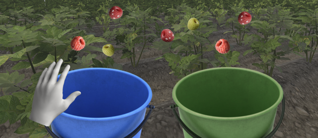
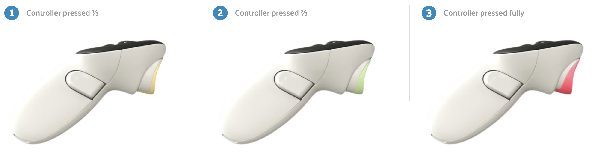
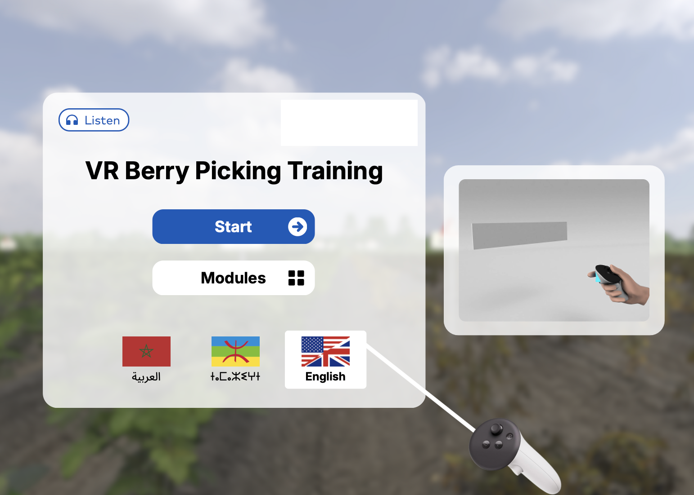
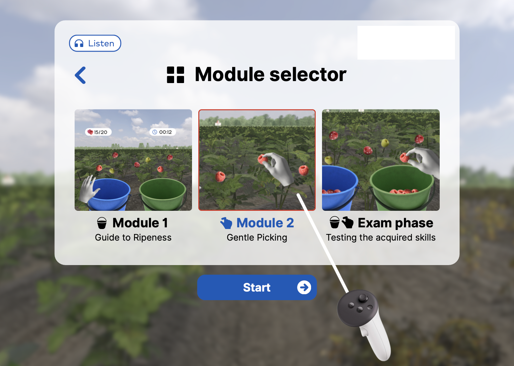

Berry picking VR training
Een meertalige, laaggeletterde trainingsmodule voor seizoensplukkers.
-
Sept. 2025 - jan. 2026
-
~ 10 weken
-
Concepter bij VR Owl
Context
De klant is een familiebedrijf gespecialiseerd in de ontwikkeling en verkoop van fruit. In de zomer hebben ze seizoensplukkers die getraind worden in rijpheidsherkenning, het voorzichtig losmaken van bessen, een efficiënte plukflow, het correct hanteren van de bessen en hygiene. Deze training duurt echter lang en wilt de klant efficiënter maken door middel van een VR-training.
De klant vroeg voor een meertalige, laaggeletterde trainingsmodule waar prestatie-indicatoren bijgehouden worden.
De belangrijkste uitdagingen
-
01
De doelgroep spreekt verschillende talen (waaronder Arabisch en Tamazight) en heeft wisselende niveaus van geletterdheid.
-
02
De plukkers hebben weinig tot geen ervaring met Virtual Reality.
Randvoorwaarden
-
Vanwege complexiteit moeten interacties (plukken, sorteren, UI) met slechts één knop worden uitgevoerd: de trigger-knop.
-
De training moet leunen op voice-overs, duidelijke pictogrammen en intuïtieve visualisaties.
-
Om fysieke veiligheid te garanderen en motion sickness te voorkomen, moet de gebruiker op één vaste plek blijven staan. De interactieve objecten bevinden zich in armlengte.
-
De training moet snel op te starten zijn via Plug-and-Play.
-
De flow van de training moet de vooruitgang van de prestatie-indicatoren weergeven.
Ontwerpbeslissingen
De belangrijkste ontwerp uitdaging was het simuleren van gevoel in een VR-omgeving om te voorkomen dat het besje geplet wordt. Hiervoor hebben we drukfases bedacht.
-
Het ⅓ indrukken van de trigger-knop op de controller: Geen actie
-
Het ⅔ indrukken van de trigger-knop op de controller: De 'sweet spot'. De controller geeft een subtiele trilling (haptische feedback) om aan te geven dat de bes vastgepakt is. Na kort vasthouden is de bes geplukt.
-
Het 100% indrukken van de trigger-knop op de controller: De bes wordt geplet. (Visuele splash + geluid)

Inclusief ontwerp
Gebruikers kiezen aan het begin hun taal via een vlag-icoon (Engels, Arabisch, Tamazight). Alle instructies en feedback worden voorgelezen. Verder kan elke voice-over opnieuw beluisterd worden via het koptelefoon-icoon Tijdens de training veranderen de controllers in 3D-handen. In de menu’s zijn deze getoond als controllers met een richtstraal.

Gamification
De training is opgedeeld in twee modules die samenkomen in een examen.
Module 1 gaat over de rijpheidbeoordeling. Er zijn drie fases: onrijp, rijp en overrijp. Rijpe bessen gaan in de groene emmer (rechts), overrijpe bessen in de blauwe emmer (links), onrijpe bessen blijven aan de struik hangen. Als feedback komt er direct een visueel symbool boven de emmer/struik met geluid.
Module 2 focust op de geleidelijke druk op de trigger om geplette bessen te voorkomen.
De Examenfase combineert de geleerde skills onder tijdsdruk.
Achteraf krijgt de gebruiker een reflectiescherm te zijn met de score-visualisatie. Pas als ze een score boven 80% hebben behaald, mogen ze het veld op.

Behaalde UX-doelen
-
✓
Dankzij het gebruik van één knop kan de doelgroep zonder enige VR-ervaring aan de slag.
-
✓
Door de combinatie van audio, pictogrammen en haptiek is de training taal-onafhankelijk.